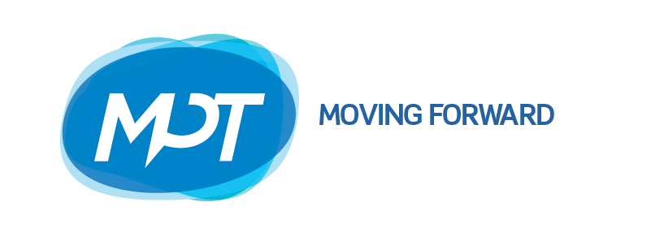
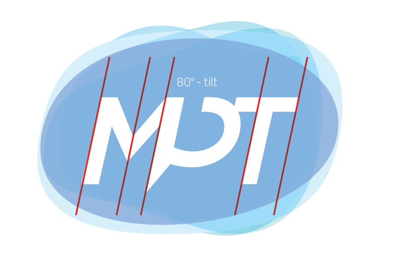

Concept : Communication at heart
What is Communication?
Communication is defined as the meaningful exchange of information between two or more participants.
To effectively communicate one’s ideas, one primarily requires 4 things: a sender, a message, a medium and a recipient. Should any of these 4 be missing, there will surely be a failure in communication.
Humans are social creatures, we need to communicate, share and connect with other people. Nowadays, connecting with other people has never been easier. With the dawn of the mobile phone and the internet, practically everyone is just a click away.
The Problem
Myanmar Post and Telecommunications (MPT) is currently the country’s sole telecom operator as well as the industry’s regulator.
MPT has been in business since 1884 and was then focused primarily on post and telegraph services. Times have changed and MPT has evolved to include telecommunications under its list of services.
The current logomark shows just that, although a very strong mark, it is showing signs of a bygone era. The mark is dated and it appears clunky. It may have worked before since MPT was the only telecommunication provider in the country but looking at it now, it fails to convey what it aims to be today - forefront in mobile technology, flexible, forward-thinking and receptive to its customers' needs.
The telecommunication industry is a dynamic and fast-paced world, where things always change and move forward.
The mark definitely needs an update to reflect this.
The Solution
We have tried not to veer away from MPT’s mission vision:
- “To connect Myanmar people and companies to the world, enabling the country development and fostering growth and prosperity”
- “To lead telecommunications development in the country providing the widest network, the best technologies and best in-class quality of services all over the country
- “To develop telecom services improving customer lifestyle while placing customer experience enhancement at the heart of the company’s culture
The Concept
What is the main purpose of a telcom company? To facilitate communication, to make it seamless for people to exchange ideas, and most of all, to make it easy for its customers to share experiences.
Technologies change all the time, before the smart phone, we used feature phones and prior to that, we had landline telephones, we had fax machines to send documents and before that, we used to communicate by post and telegrams. The means may change, but the essence stays the same.
We exchange ideas. We share thoughts. We impart experiences. We communicate.
With this new identity, We strip everything down to the essentials and show what MPT is all about. ‘to be the medium for your message.’ It does not matter how you send your message as long as it gets sent. The product is reaching people.
{kind=link}
The Logotype
{kind=link}
We use a combination of a logotype and a symbol to convey MPT’s mission vision clearly.
{kind=link}
The logotype is a logo using typography. It is very readable and easy to decipher. The disadvantage is that can look too common. To combat this, we have customised the typeface and adjusted it to be unique enough while still to MPT.
Integrating a symbol (the dialogue balloon ‘P’) helps make the logo striking at the same time not too distracting. Clarity and brevity are the identity’s main objectives.
The dialogue is positioned right in the middle because MPT puts communication at the center of everything. You will notice that the dialogue balloon is opened. It is to represent the open dialogue that MPT is willing to give its customers in achieving their goal in delivering excellent customer service.
Typeface
{kind=link}
We use Scene by Monotype as our foundation since it is already a typeface that is modern, clean and extremely readable. It is a typeface that is highly customiseable but at the same time, works extremely well out of the box.
Scene is a workhorse typeface works both as a header and holds up well as body type. It exhudes masculinity, it is firm while being approachable.
The Bubble
Communication is never done in the same way twice. Communication is not a rigid process. All of us communicate differently. We express ourselves uniquely. Communication should be fluid and free-flowing.
{kind=link}
The Bubble represents the fluidity of communication. It represents the different ways we can say one thing. It shows that communication is not a rigid task. It shows that communication should always be free flowing.
Piling everything on top of each other, No matter what you say, how you say it, where you say it, 1 thing is present on all of them; MPT and the dialogue.
Colors
{kind=link}
We stick with blue for the color since we did not want to deviate too much from the original MPT color scheme. What it needed was a splash of more shades of blue to liven it up and to be current. The vibrant hues make the identity pop and infuse it with vigor.
80-Degree Shear
{kind=link}
We shear the logo to reflect MPTs new philosophy in moving Myanmar forward